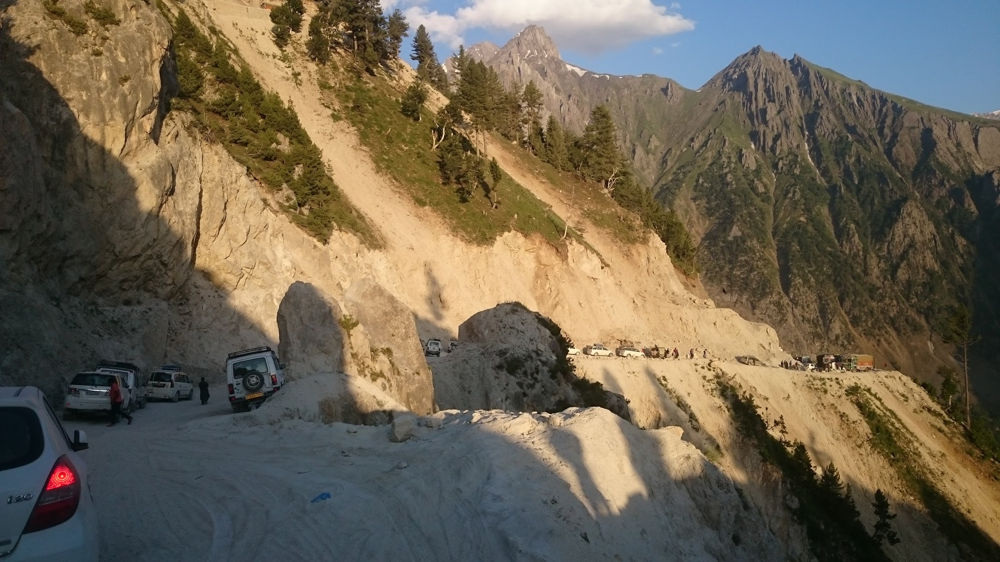
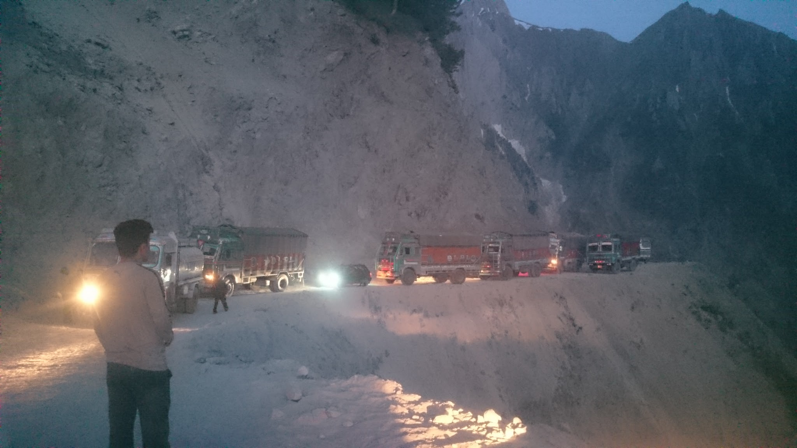
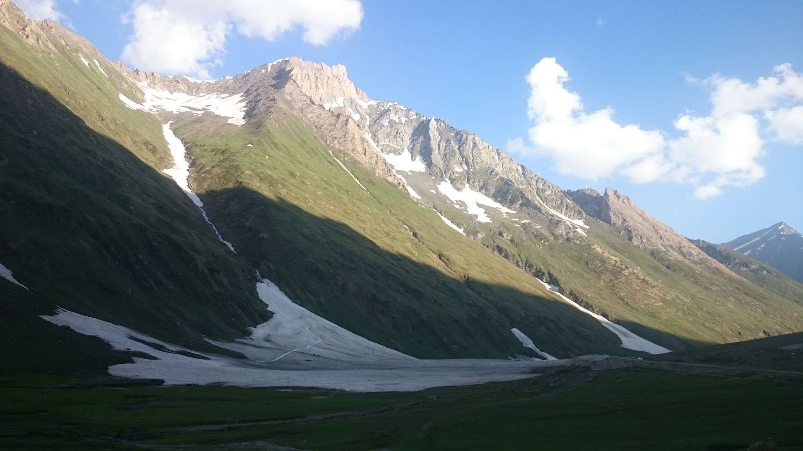
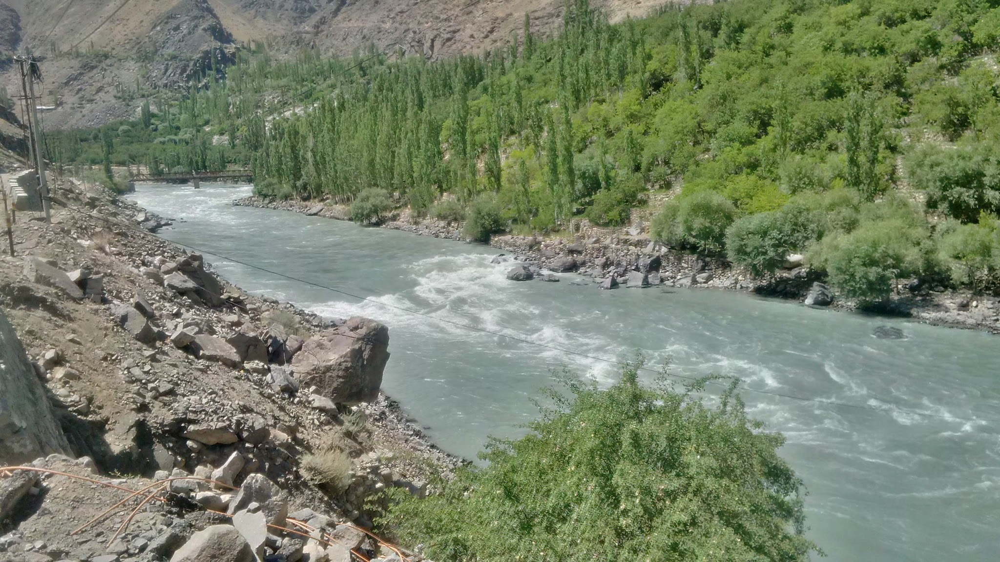

The Journey Back - Kashmir
It was when I was standing watching all the police vehicles pass by and broken buses plying away, that I decided that we could not wait anymore and had to leave tonight. It was already 3.30 am and separatists were involved in stone pelting since the morning. This was in the aftermath of the latest curfew imposition in Kashmir.

We had been stuck here for two days already. The CRPF team were not letting anyone through. We had already missed our flight. We were due at work. It made me wonder how man’s priorities change in a few hours. Two hours before we reached where we were stranded, we were at the Kargil war memorial, with tears in our eyes looking at photographs and listening to heartening tales of bravery of the Jawans. As we were travelling through Dras there was an odd sound from the left tire. We stopped at mechanic’s and asked him to fix the issue. He searched but to no avail. He gave up eventually and said it’s just a sound of wear and tear and not to worry much. It happens when the car has driven so much. We refused to continue and asked him to please search properly as we were scared of getting stranded somewhere as we had no spare tire either, we already lost it to a glass piece which sliced right through in the first leg of the journey.

And there I was standing in the chilly rain in the middle of the night ready to risk it all and drive right through the town where stones were being thrown at vehicles and tires were burning in the middle of the road. But I had no choice. It didn’t look like the curfew would be lifted anytime soon. This was the only chance we had. There remained only this difficulty of not having any spare tire that really worried us. What if we had another puncture. What then. Who would help us.
Finally, with no real answers to any of these questions we entered into the night driving away as fast as we could. We only had to get to Jawahar tunnel. Crossing it would take us into Jammu. As per the men in uniform, that was the safest place to be in this city. “As soon as you cross the tunnel there is no danger”.

We drove through Srinagar following offline Google Maps. We took a wrong turn at one point, and it was as if we saw a ghost. It was just a matter of taking a U-turn on a totally empty road, but everyone in the car started screaming and praying. Fear does that to you.
We drove on, a friend of mine on the wheel, while I was navigating. After driving for 20 minutes, he stopped the car in the middle of the road and said “I can’t continue anymore, I can’t see clearly, and my head is not in the right place. I just can’t drive”. We changed seats at lightening speed afraid that someone would shoot at us. We kept driving towards Anantnag, a major separatist town.
The roads were burning. It was actually broken glass all over and burnt tires placed across the entire road. Tree trunks strewn across the road. And us driving and dodging everything hoping that the tires do not puncture, the car doesn’t break down.

There weren’t many people in sight. But we were still afraid. Not wanting to stop anywhere due to the risks involved to life. We drove on in this manner until we finally reached the foothills of the tunnel. There was a huge line of cars here. Everyone wanting to escape the city where lives did not have the same cost anymore and people were dying in huge numbers. This valley of beauty for which the Mughal emperor Jehangir, when he laid eyes for the first time on this city said “If there is heaven on earth it is here, it is here, it is here”, was painted in red. We got through the tunnel and even after crossing into Jammu we did not stop for another 6 hours to get as far away as possible.
This feeling was new. To become a stranger in your own country is something not many have experienced. This feeling of making it back alive, to actually have made it through that ordeal was not as others generally put, one of elation. But one of relief.